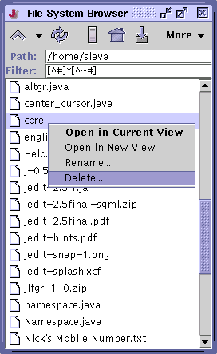

jEdit doesn't deal with disk files directly. Instead, it passes all buffer loading and saving through one of several available storage implementations known as virtual filesystems. The jEdit core includes local, FTP and URL filesystems. Plugins can be written to add more.
There are three ways to access the VFS browser. The Open File and Save As dialog boxes embed one. Utilities>File System Browser displays a standalone version. By default, the standalone VFS browser is shown in a separate frame, but if you prefer, you can set it to be docked into the current view in Utilities>Global Options; see the section called The Global Options Dialog Box in Chapter 9. The browser consists of a tool bar, a path field, a filename filter field, and the file list itself.
The toolbar buttons perform the following actions, from left to right:
Up - takes you to the current directory's parent. The popup arrow next to this button displays a menu listing all the parent directories of the current directory, up to the filesystem root
Reload - updates the file list by reloading the directory
Local Drives - displays all local drives in the file list. On Windows, this will be a list of drive letters; on Unix, the list will only contain one entry, the root directory (/)
Home Directory - takes you to your home directory, the location of which is system-specific
Parent Directory of Current Buffer - take you to the directory containing the current buffer (if the current view is split into multiple panes, the "current buffer" is defined as the one that most recently had keyboard focus)
The More menu contains several less frequently-used commands:
View as List - if selected, files will be displayed in a simple list
View as Tree - if selected, files will be displayed as a tree structure, with directories being branches that can be expanded, for viewing an entire directory hierarchy at once
Show Hidden Files - if selected, hidden files will be shown in the file list. The definition of a hidden file is system-specific; on Windows, files with the "h" attribute are hidden. On Unix, files whose name begins with "." are hidden
New Directory - prompts for a directory name and creates a directory with that name in the current directory. Note that not all virtual filesystems may support this operation
Add to Favorites - adds the currently selected directory (or the currently displayed, if there is nothing selected) to the favorites list
Go to Favorites - displays the favorites list. To remove a directory from the list, right-click on it and select Delete from the resulting popup menu
Clear Remote Directory Cache and Forget Remote Passwords - see the section called The FTP Filesystem
The filter text field allows you to specify a subset of the current directory to display in the form of a glob pattern. See Appendix D for more information about glob patterns. Both the path and filter fields support a history; see Appendix E for details.
Right-clicking on a file in the VFS browser displays a popup menu. If the buffer is already open, the popup will have commands to display it in the current view, display it in a new view, or close it. Unopened file popups have items for opening, deleting and renaming. Note that not all virtual filesystems may support deletion and renaming. Attempting to delete a non-empty directory will give an error; only empty directories can be deleted.
Several aspects of the VFS browser can be customized in the Utilities>Global Options dialog box; see the section called The Global Options Dialog Box in Chapter 9 for details.
The VFS browser can be navigated from the keyboard. The following keystrokes are defined:
|
Figure 8-1. The stand-alone VFS Browser
